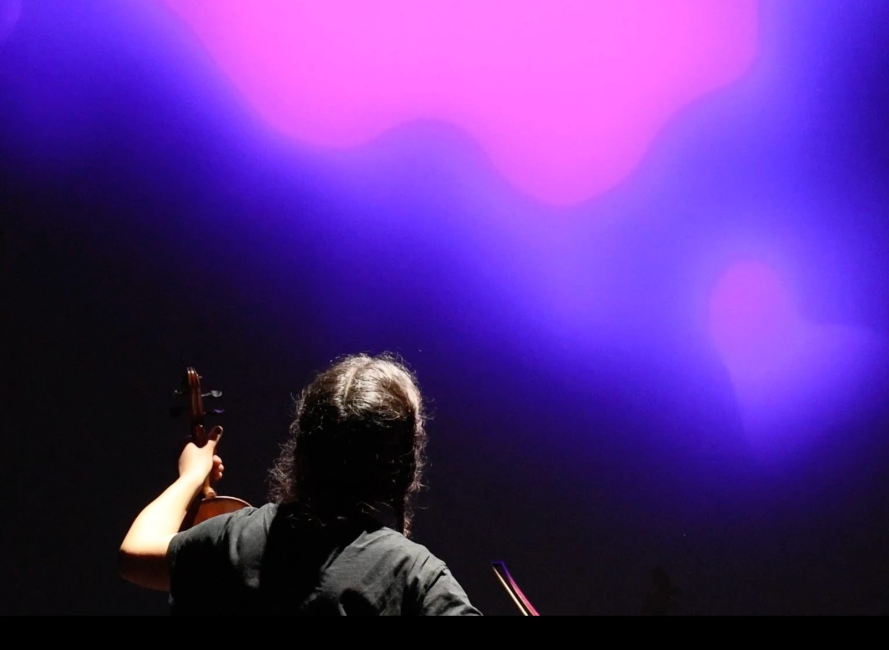
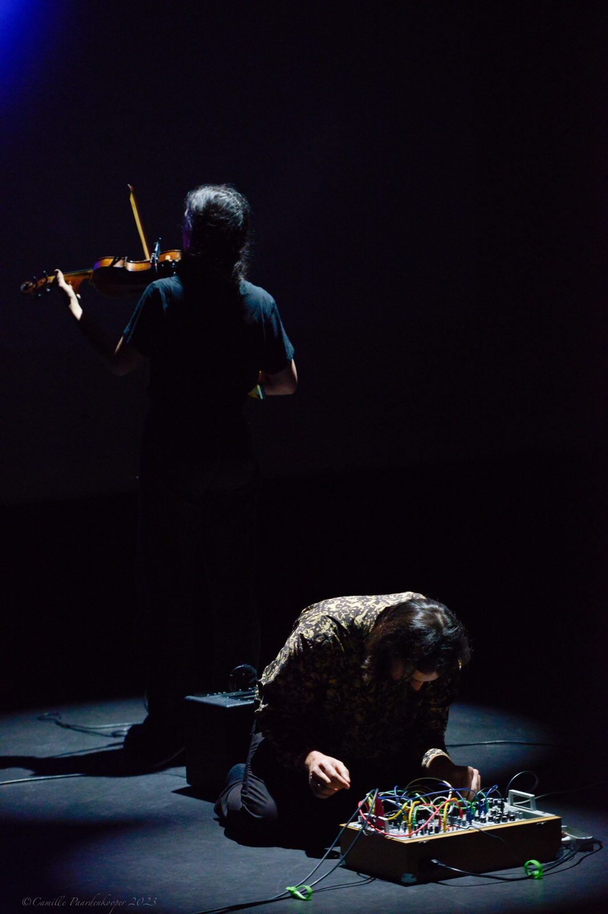
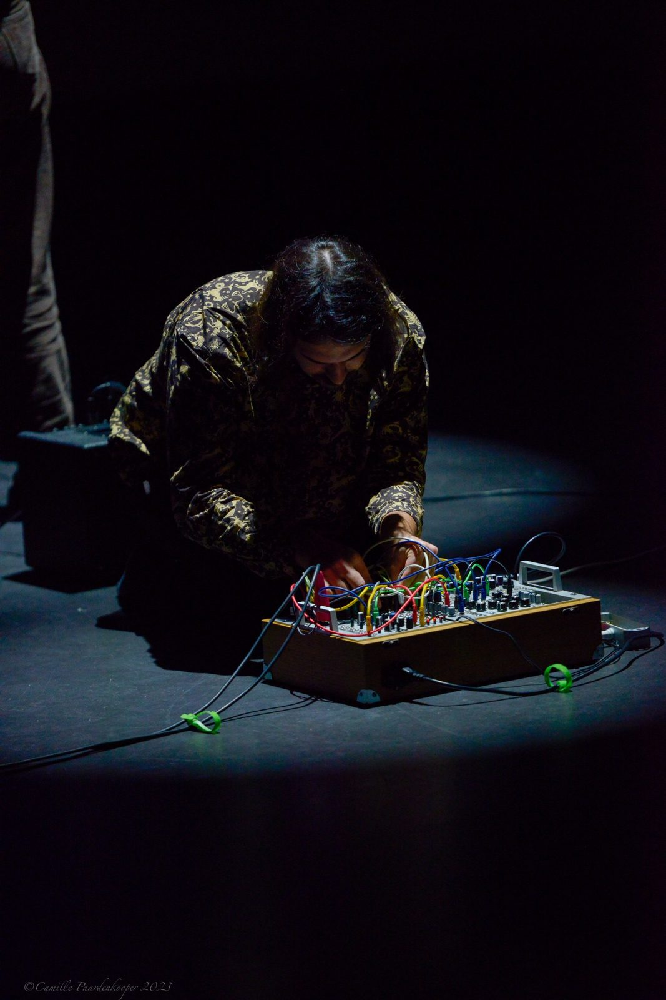
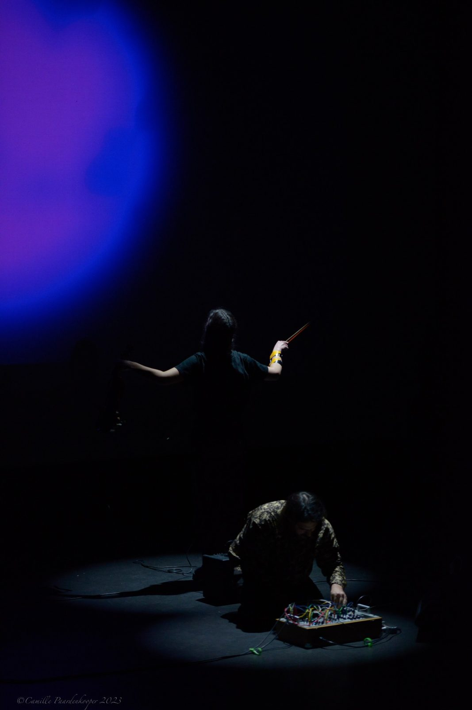
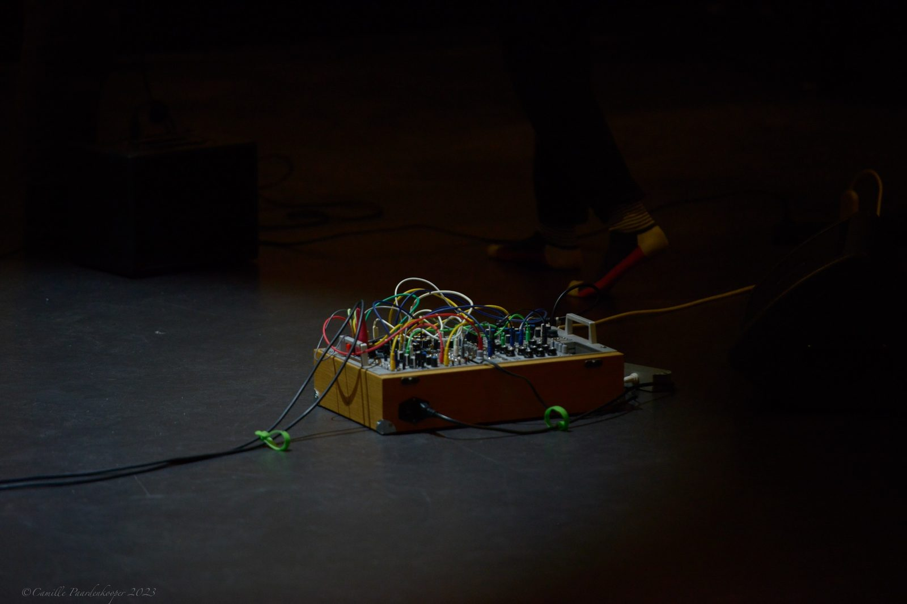
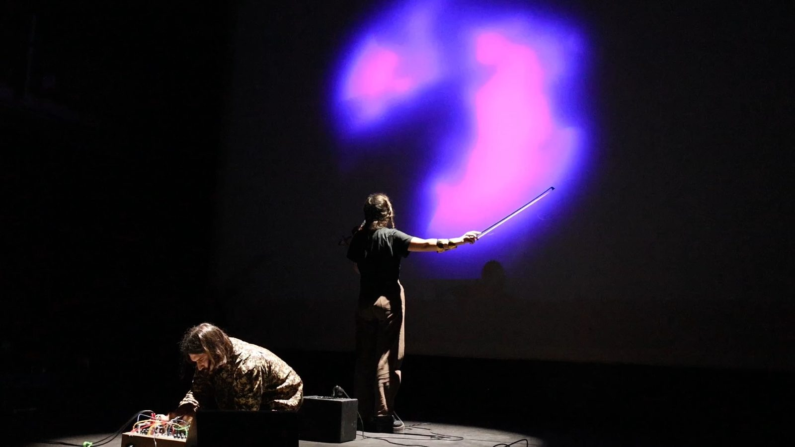
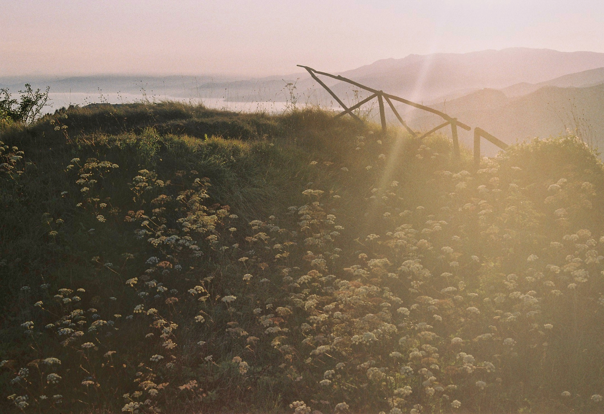
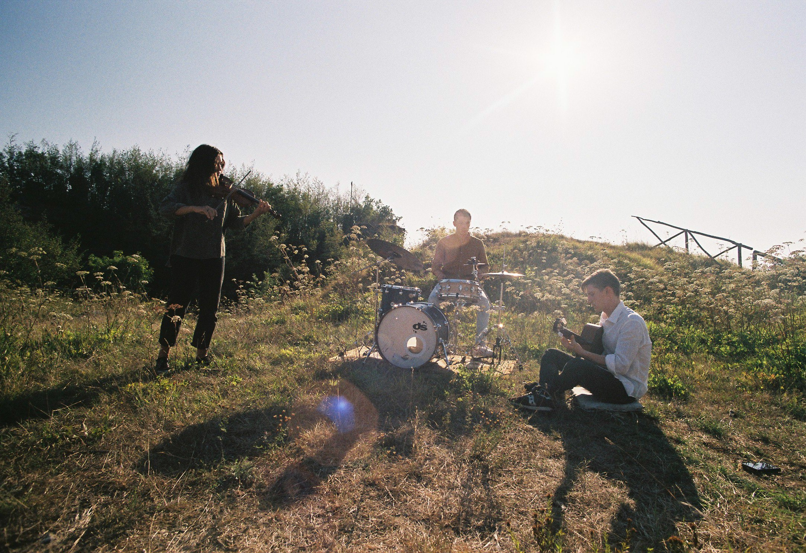
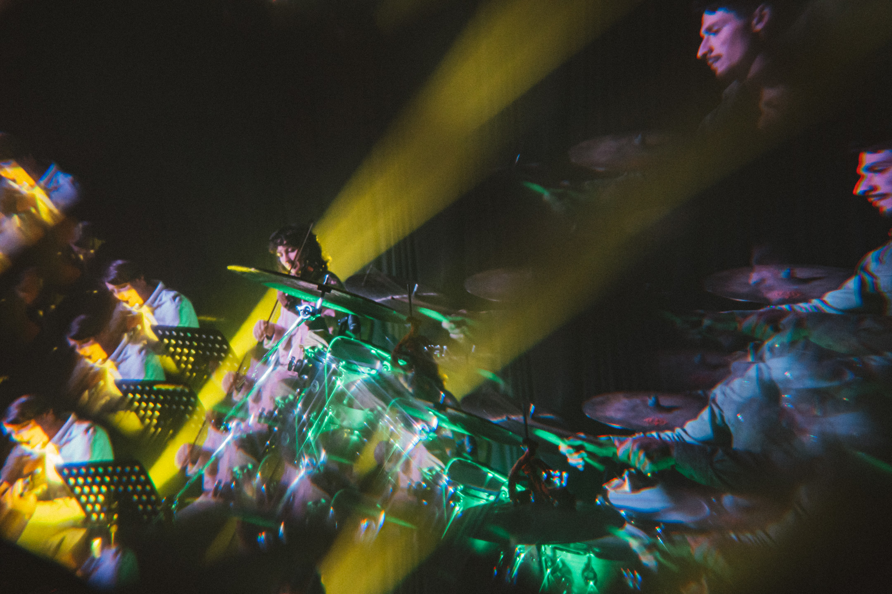

Progetto di mobilità artistica europea · Music / Experimental Sound Art
ecologie
sonore
Residenza artistica con concerti site-specific, workshop e pratiche di ascolto e improvvisazione.
Sound art, recursività e contingenza nello spazio sonoro.
Pascal Burbach · Maria Isolina Cozzani · Matteo Traverso — Late for Experiments
Con il partner locale Giocando in Tono APS
↓ Sound Art Lab — 26 agosto · iscriviti
Programma
Residenza in Liguria · 23–28 agosto 2026
-
23.08
Oratorio San Bernardo e Santa Lucia, Santa Margherita Ligure
Avvio della residenza, ricerca artistica, registrazioni, ascolto e concerto pubblico alle ore 21:00.
-
24.08
Oratorio dei Bianchi, Rapallo
Ricerca artistica, registrazioni ed esplorazione delle caratteristiche acustiche del luogo (organo storico) e concerto pubblico alle ore 21:00.
-
26.08
Sound Art Lab — "Fu Olivetti", Genova
Workshop di sound art, improvvisazione e ascolto, ore 15:00–18:00. Gratuito, offerta libera — iscriviti ↓
-
27.08
Chiesa di San Nicolò di Capodimonte, San Rocco di Camogli
Ricerca artistica, registrazioni ed esplorazione delle caratteristiche acustiche del luogo (organo storico) e concerto pubblico alle ore 19:00.
-
28.08
Oratorio di Sant'Erasmo, Sori
Ricerca artistica, registrazioni ed esplorazione delle caratteristiche acustiche del luogo (organo storico) e concerto pubblico a fine giornata.
Workshop
Sound Art Lab
26 agosto 2026 · 15:00–18:00
"Fu Olivetti" — Piazzetta Carlo Chiaffarino 9 rosso, 16124 Genova GE
Gratuito · offerta libera · max 15 persone · portare il proprio strumento
Per domande scrivi a mariacozzani@gmail.com
Sound Art Lab è rivolto a studenti, musicisti e artisti interessati all'improvvisazione libera, alla sound art e alle pratiche contemporanee dell'ascolto. È aperto a ogni strumento, voce ed elettronica; non è richiesta esperienza precedente di improvvisazione.
Svolgimento
- Attivazione dell'ascolto — esercizi di orientamento nello spazio, percezione del silenzio e consapevolezza del paesaggio sonoro.
- Suono e aspettativa — pratiche per riconoscere e sospendere automatismi percettivi, mettendo in discussione le gerarchie tra "musica" e "rumore".
- Ricorsività e contingenza — esplorazione di piccoli sistemi di input/output in cui ogni gesto modifica continuamente le condizioni del gesto successivo.
- Improvvisazione collettiva — costruzione di un ecosistema sonoro condiviso tra strumenti, corpi, ambiente e ascoltatori.
- Registrazione finale — documentazione audio della performance conclusiva come esito del percorso di ricerca sviluppato durante il workshop.
Il progetto
Ascoltare prima di riconoscere
ecologie sonore è una residenza artistica che intreccia performance site-specific, workshop e pratiche di improvvisazione. Attraverso concerti in spazi caratterizzati da specifiche qualità acustiche e ambientali, come architetture storiche, chiese e paesaggi naturali, il progetto propone di spostare l'attenzione dall'opera al fenomeno sonoro, mettendo al centro il modo in cui ascoltiamo e il ruolo che spazio, tempo e corpo assumono nella costruzione dell'esperienza percettiva.
In questa prospettiva, l'improvvisazione non è intesa come un linguaggio stilistico, ma come una pratica di ascolto, relazione e adattamento, capace di rispondere alle caratteristiche acustiche, ambientali e sociali di ogni luogo.
Per gran parte della storia della musica colta europea, il suono è stato concepito principalmente come materiale da organizzare. A partire dalla riflessione pitagorica sulle proporzioni numeriche fino allo sviluppo della tradizione musicale occidentale, il valore della musica è stato spesso associato alla forma, all'ordine e alla possibilità di descrivere le relazioni sonore attraverso strutture stabili.
Nel corso del Novecento, è proprio all'interno di questa tradizione che tale concezione viene profondamente messa in discussione. Il campo della pratica musicale si estende oltre l'organizzazione dei suoni, fino a includere il rumore, il silenzio, il caso, l'ambiente e le condizioni stesse in cui l'ascolto avviene. L'opera non coincide più necessariamente con una forma chiusa, ma può emergere dall'interazione tra suono, luogo, tempo e ascoltatore.
ecologie sonore esplora il suono come fenomeno percettivo e relazionale. Attraverso performance site-specific e workshop partecipativi, il progetto crea situazioni in cui spazio, ambiente, ascolto e improvvisazione concorrono alla costruzione dell'esperienza sonora, instaurando un dialogo con i paesaggi naturali, le architetture e il patrimonio culturale del territorio genovese e ligure.
I workshop consistono in esperienze di esplorazione condivisa, nelle quali l'ascolto viene sperimentato come pratica corporea e relazionale. Attraverso esercizi, improvvisazioni, discussioni e analisi collettive, i partecipanti sono invitati a osservare come il contesto, il movimento, la distanza, il riverbero e la presenza degli altri influenzino continuamente ciò che percepiamo.
Musicisti provenienti da qualsiasi formazione e linguaggio musicale sono invitati a partecipare con il proprio strumento, mettendolo in dialogo con lo spazio e con gli altri partecipanti.
ecologie sonore è un invito a interrogare le abitudini percettive che ereditiamo e a sperimentare modalità di ascolto più aperte, plurali e condivise.
Artistic research
La stanza come ecosistema
Ogni performance nasce in relazione al luogo che la ospita: volumi, materiali, tempi di riverberazione, suoni provenienti dall'esterno, condizioni atmosferiche, disposizione del pubblico e posizione dei musicisti partecipano tutti alla costruzione dell'esperienza sonora. "Suonare una stanza" non significa sfruttarne l'acustica, ma instaurare un dialogo continuo con ciò che essa restituisce: ogni gesto sonoro produce una risposta — una risonanza, un'eco, una trasformazione percettiva — che modifica il modo in cui il gesto successivo verrà concepito.
L'intero sistema funziona ricorsivamente: ogni suono, ogni pausa, ogni spostamento nello spazio rientra immediatamente nel processo come nuova condizione da cui ripartire. I concetti di ricorsività e contingenza, sviluppati anche dal filosofo Yuk Hui nella sua riflessione sui sistemi tecnici e sulle cosmotecniche, descrivono la stanza non come uno spazio neutro, ma come un cosmo locale: un ecosistema temporaneo in cui architettura, corpi, strumenti, fenomeni acustici e condizioni ambientali co-evolvono, contribuendo alla costruzione dell'evento sonoro.
Il gruppo artistico
Tre pratiche, un unico sistema d'ascolto
Maria Isolina Cozzani
Violino
Violinista e artista interdisciplinare con base a Colonia. La sua ricerca si concentra sulla fragilità e sulla continua trasformazione del suono degli strumenti ad arco, tra gesto, materialità e ascolto situato.
Matteo Traverso
Sintetizzatore modulare
Artista sonoro con base a Colonia. Esplora la gestualità dell'elettronica attraverso sintesi granulare e configurazioni elettroacustiche distribuite, indagando il rapporto tra suono, spazio e tempo.
Pascal Burbach
Batteria e percussioni
Batterista, percussionista e improvvisatore con base a Colonia. Lavora con batteria, percussioni e oggetti sonori esplorando pratiche di ascolto collettivo tra materia, gesto e contesto.
Progetto sostenuto dal Goethe-Institut nell'ambito di Culture Moves Europe, programma finanziato dall'Unione Europea attraverso Creative Europe.
This work was produced with the financial assistance of the European Union. The views expressed herein can in no way be taken to reflect the official opinion of the European Union.
Violin and Algorithm Duet (2025)
Violin - Maria Isolina Cozzani
Machine listening, concatenative synthesis algorithm - Matteo Traverso
Concept - Maria Isolina Cozzani, Matteo Traverso
This piece is an improvised duo between violin and algorithm. During the first two minutes the violin improvises alone, providing the sound material. The algorithm's playback is determined by the violin's musical decisions. In the duet section, the two players influence each other—texturally and structurally.
Video: YouTube
what is left, what there grows (2025)
Finalist at MA/IN Matera Intermedia Festival 2025.
"what is left, what there grows" is a self-reactive environment composed of sound, immersive multi-channel audio (4–8 channels), upcycled trash speakers, small robots, and obsolete or broken technological remains—motherboards, wires, machine parts. Although over 90% of the installation is built from discarded or recycled materials, the experience it offers is one of vitality, regeneration, and ongoing transformation—whether driven by internal desire or external intervention.
The installation evokes a kind of natural ritual in which the Anthropocene compresses geological eras, accelerating fossil formation through human waste. Decades of technological residue converge, reshaping sound, air, shadow, and perception, exposing a fractured sense of detachment from our consumer responsibilities.
This is a fragile, eroded, yet vibrant environment in constant flux. All elements—robots, sound structures, speakers—listen and respond to one another; the system is entirely audio-reactive, including its interaction with the audience. The presence of living, reactive technology gives the impression of stepping into a sacred terrain, made of a new kind of nature—where even stepping over a cable or past a tiny machine feels intrusive.
The installation sustains a delicate balance. It no longer needs the human, and barely welcomes them—except as careful listener, as silent observer.
Media: Video (Drive)
Exoplanet — Inopia (2025)
EXOPLANET is a sonic exploration of human existence in an age of global crises. The collective Inopia poses questions of empathy, responsibility, and the relationship between humanity and the environment—expanding the understanding of jazz as a social, emotional, and reflective art form.
The album unites composition and improvisation into an organic whole, merging elements of ambient, drone, electroacoustic music, and free improvisation. Sound becomes a medium of thought and emotion, a mirror of a world in transformation. Sounds interweave, lose their distinct origins, and create multilayered spaces of resonance filled with emotional and cultural depth.
Listen / info:
Music-Hub ·
Bandcamp ·
@inopiasound
Dump and Die — Lavish Trio
Lavish ist ein improvisierendes Trio, bestehend aus den komponierenden Musikern Sol Jang (Klavier), Maria Isolina Cozzani (Violine) und Kim Kamilla Jäger (Cello). Dieses Projekt entstand aus dem Drang heraus, musikalische Strukturen zu schaffen, die sich um ein zentrales Thema drehen. Klangbasierte Improvisation, Jazz und sich wiederholende Muster werden in einer kammermusikalischen Umgebung miteinander verwoben, die klein und zerbrechlich, aber auch brutal und brüllend klingen kann. Komponieren und Improvisieren sind gleichermaßen Teil ihres Materials, und die Stücke können auf überraschende Weise auseinandergenommen und neu kombiniert werden.
Auszeichnungen: Gewinner des Erasmus Jazz Prijs 2023, Mittelyoung – Mittelfest 2023 und CS Carinthischer Sommer Under 30.
Album – Dump and Die: Das erste Album des Lavish Trios ist una rappresentazione dei Millennials, nati alla fine dell'era analogica e cresciuti nella rivoluzione digitale…
Links:
Unit Records — Artist ·
Instagram ·
Spotify (Album)
ISLN: geography of sounds, shapeshifting multiplicities (2023)
In ISLN — geography of sounds, shapeshifting multiplicities, Maria Isolina Cozzani brings her master's research to the surface. ISLN enables an unexplored space and time for improvisation and takes place in an imaginary setting where the transposed laws of physics make room for renewed perspectives. A constellation of islands inhabited by sounding organisms describes a geography of sounds, a constellation of objects, entities, expressions, qualities, and territories that come together over time to ideally create new ways of functioning.
This assemblage, by making countless and unexpected connections, creates an ecology, an entity out of it all, a shapeshifter made of organisms and sounds that bring people and ideas together. Created for a large ensemble of 17 improvising musicians, ISLN is an explorable, walk-through, live sounding installation/performance.
Concept: Google Drive
Art&mide, Studio 1 — The evocation of Ἄρτεμις (2023)
art&mide is an installation/performance born from an idea of Maria Isolina Cozzani and subsequently developed by Maria Isolina Cozzani and Matteo Traverso. The current state of the work consists of an iterative audiovisual installation and a sound performance with generative / reactive video to movement & audio.






Solo, in the living room – a listening session (2023)
In a nutshell: This solo performance was conceived based on the poetry book in plein site by Andrea Van der Kuil. I worked on the translation of poetry into music, to create a piece of music and dance based on poems that I could choose from Andrea's poetry book. The poems that I choose were connected to the concept of making and destroying, this constant tension of ephemerality, linked to Andrea's work as an embroiderer. I conceived a solo piece based on the embroidering sounds on a canvas and then simply listen to the layers of music while they disappeared again. After 15 minutes of building up of the sounds, there are 15 minutes of building down while I was joining the audience in a listening session of the materials I just had created.
Media:
Video Example 1
Video Example 2
E D E R A
"Like ivy, which comes from the soil, grows on ruins and gives a new face to the past, the human being lives shaped by past experiences and knowledge; he welcomes the past with awareness to face the future."
The suggestions of nostalgia and awareness of the past, originating from the decadence of the forts of Genoa, are the source of the aesthetics of the project Edera.
Aesthetics
Imagine being on a hill, resting your feet on a ruined structure overlooking the sea, colliding with the wind and the rays of the sun. You watch the sunset color the sky red, hear the lapping of the waves in the distance, feel nostalgia and gratitude.
A dialogue is born between the individual (with his brevity and haste to live), the strong (slow to die like a secular tree) and the cyclical nature of sunset (a reflection of a time consumed but not yet concluded).
The sense of gratitude and nostalgia experienced strengthen the individual who becomes self-aware in relation to the time lived and the time to be lived, arriving at a fundamental conclusion: it is necessary to reconcile the past to face the future.
Music
The harmonic language draws on contemporary jazz and the impressionist language of the early 1900s, creating nostalgic, ambiguous and poignant sounds; from a rhythmic point of view, the project plays on the coexistence of different meters and polyrhythms to give different faces to the meter and to the pulse.
The aforementioned dialogue translates into music with the improvisation through which the instruments take on the shapes of the interlocutors: the drums are the ground on which everything rests and from which the wind rises, the violin is air and light that gives shape and warmth, the guitar is the ivy, which is what comes from the past and thrives on it.
The project consists of:
Matteo Gherardi Vignolo, batteria
Maria Isolina Cozzani, violino e violino baritono
Luca Ambrosi, chitarra classica.
I brani sono composti da Matteo Gherardi Vignolo e Maria Isolina Cozzani.
Listen: Streaming Platforms
Links: Instagram



1142 km, the road trip piece: guidelines for a free improvisation session (2021)
In a nutshell: 1142 km is a 27-minute-long piece based on free improvisation. the piece was conceived as a travel journal, pre-recorded on a car trip from Santa Margherita Ligure (IT) to Arnhem (NL). Consisting of voice mails, the journal, served as audio score on which the ensemble free improvised on. The result is a mixture between a verbal narration and liquid and iridescent sounds, going from a timbric interplay to more cinematic and melodic episodes, drones, grooves, glimpses from multiple musical contexts.
Ensemble:
Pascal Burbach (drums)
Maria Isolina Cozzani (violin + effects)
Yunah Han (piano)
Matteo Traverso (modular synth + live electronics)
Marie Weis (vocals)
Description: Google Drive
Listen: SoundCloud
Steps to be taken in case of death: (2019)
2019 audio-video installation by Cozzani and Traverso, simulating a surgical operation on a violin in an operating theater. It merges visual, gestural, and sound elements, influenced by Cage and Lachenmann, creating a controlled environment where reality and fiction intermingle.
Links: Trailer (Vimeo) · Full performance
locked:outputs (2020)
Explorative video game by Cozzani, Traverso and De Negri created during the 2020 lockdown. Glitchy 3D models and original audio tracks packed into a navigable experience.
Gameplay: YouTube
Studio sul plasma (2019)
3D particles audio-reactive system emulating plasma behaviour; scratched violin sounds re-elaborated with filters and a moving particles system.
Media: YouTube